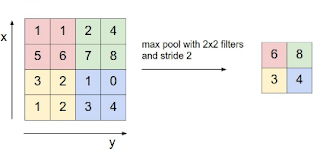

Convolutional Neural Networks
The complexity of the neural network grows exponentially with the number of input parameters. This is very strongly felt when we work with images. A simple tiny image of 64x64 RGB pixels implies 64x64x3 = 12288 input parameters. A decent Neural network that analyzes such an image would have atleast 1% -> 122 neurons in the first layer. That would mean 12288 x 122 = 1.5 million weights in the first layer of the network. And many more in the following layers. We would need a massive data set to avoid overfitting. And it would require a huge amount of processing just for tiny images of 64x64 pixels. Any meaningful training would require a decent image of atleast 1024x1024 pixels. The processing of these images would go beyond all scales. Certainly, we need some improvement in the process.
If we think about the way vision works, the object in one corner of the image has little to do with the other corner of the image. Objects and edges are limited to a small area around the edge. Then why process the entire image at the same time? CNN deals with processing the image in a small parts at a time.
The Convolution Neural Networks are based on the concept of Convolution filter. Now what is a Convolution filter? Below diagram describes it with a small example.

Traditional Neural Networks work by crossing the input matrix with a weight matrix of similar size. That leads to heavy matrix multiplication. But CNN eases this task by significantly reducing the size to 3/5/7. This slides along the image, working on small blocks at a time. The processing required across the image is quite similar and thus this works very well. Thus, as in the case above, if we have an RGB image of 64x64 pixels, we could have three convolution filter of 3x3 (one per layer). That works a lot better than a fully connected dense network.
Edge Detection with CNN
The structure of the Convolution filter determines which aspect of the image it highlights. A simple filter like this would identify the vertical edges.
| 1 | 0 | -1 |
| 1 | 0 | -1 |
| 1 | 0 | -1 |
This works pretty well for purely vertical edges. Similarly we can have a horizontal edge detector. But in a decent image, we have edges in variety of angles. We can think of combining both with the hope of getting all kinds of edges. But, combining these two filters does not give a good performance. In a real scenario we use one of these
Sober Filter
This adds transitions in each direction. That way, any change in inputs in the horizontal or vertical direction will be noticed when convolved with this filter.
| 1 | 0 | -1 |
| 2 | 0 | -2 |
| 1 | 0 | -1 |
Schars filter
This works on similar principles as the Sober Filter. But it adds more drastic values to get a higher order accuracy. This helps generate sharp outputs. Might also catch more noise.
| 3 | 0 | -3 |
| 10 | 0 | -10 |
| 3 | 0 | -3 |
Essentially they lay more stress on the center row. But they just detect vertical edges. We can get horizontal edges with the transpose. But how about other edges? The best answer to this problem can be found from machine learning itself! We can identify the 9 weights of the convolution matrix using machine learning itself!.
Concepts
Here are some of the important concepts that we should know before we go further into using CNN.
Padding
One visible problem with the Convolution Filter is that each step reduces the "information" by reducing the matrix size - shrinking output. Essentially, if the original matrix is N x N, and the filter is F x F, the resulting matrix would be (N - F + 1) x (N - F + 1). This is because the pixels on the edges are used less than the pixels in the middle of the image.
If we pad the image by (F - 1)/2 pixels on all sides, the size of N x N will be preserved.
Thus we have two types of convolutions, Valid Convolution and Same Convolution. Valid essentially means no padding. So each Convolution results in reduction in the size. Same Convolution uses padding such that the size of the matrix is preserved.
In computer vision, F is usually odd. So this works well. Odd F helps retain symmetry of the image and also allows for a center pixel that helps in various algorithms to apply a uniform bias. Thus, 3x3, 5x5, 7x7 filters are quite common. We also have 1x1 filters.
Strided Convolution
The convolution we discussed above is continuous in the sense that it sweeps the pixels continuously. We can also do it in strides - by skipping s pixels when moving the convolution filter across the image.
Thus, if we have n x n image and f x f filter and we convolve with a stride s and padding p, the output is:
((n + 2p -f)/s + 1) x ((n + 2p -f)/s + 1)Ofcourse if this is not an integer, we would have to chop it down.
Convolution v/s Cross Correlation
Cross Correlation is essentially convolution with the patrix flipped over the bottom-top diagonal. Flipping adds the Associativity to the operation. But in image processing, we do not flip it.
Convolution on RGB images
Now we have an n x n x 3 image and we convolve it with f x f x 3 filter. Thus we have a height, width and number of channels in any image and its filter. At any time, the number of channels in the image is same as the number of channels in the filter. The output of this convolution has width and height of (n - f + 1) and 1 channel.
Multiple Filters
A 3 channel image convolved with a three channel filter gives us a single channel output. But we are not restricted to just one filter. We can have multiple filters - each of which results in a new layer of the output. Thus, the number of channels in the input should be the same as the number of channels in each filter. And the number of filters is the same as the number of channels in the output.
Thus, we start with 3 channel image and end up with multiple channels in the output. Each of these output channel represents some particular aspect of the image that is picked up by the corresponding filter. Hence it is also called a feature rather than a channel. In a real deep network, we also add a bias and a non linear activation function like RelU.
Pooling Layers
Pooling is essentially combining values into one value. We could have average pooling, max pooling, min pooling, etc. Thus a nxn input with pooling of fxf will generate (n/f)x(n/f) output. It has no parameters to learn.

A typical CNN would have a several pairs of convolutions followed pooling layers.
CNN Architectures
Petty neural networks with a couple of perceptrons are good for academic study. But for solving real life problems, we need much bigger networks. In fact, neural networks has been an academic topic for few decades. But today, it has started hitting the reason because of the ability to process bigger networks. But just increasing the count of perceptrons is not enough. They need to be laid out in a good architecture. Else it just does not add any value to the network. It can also load the network and reduce its performance.
We always have a risk of overfitting. In deep networks, we have another very serious problem. It is possible that the entire model does not align well to the data. The regression is based on the first and the last layer, it is quite possible that the intermediate layers sway around and the model is not created properly.
Identifying a good network architecture is not an easy job. Years of research have gone into it, and we look forward to a lot more research and improvement in the performance.